항공기관정비기능사 (2010-01-31 기출문제)
1과목: 비행원리
1. 날개에 충격파를 지연시키고 고속 시에 저항을 감소시킬 수 있으며, 음속으로 비행하는 제트 항공기에 가장 많이 사용되는 날개는?
- 뒤젖힘 날개
- 타원 날개
- 테이퍼 날개
- 직사각형 날개
(정답률: 83%)

2. 다음 중 [베르누이의 정리]의 가정(假定)으로 옳은 것은?
- 점성 및 압축성 유동
- 비점성 및 압축성 유동
- 점성 및 비압축성 유동
- 비점성 및 비압축성 유동
(정답률: 70%)
3. 비행기의 상승률을 나타낸 식으로 옳은 것은? (단, Pr : 필요마력, Pa : 이용마력, W : 항공기의 무게이다.)
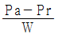
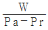
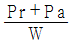
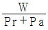
(정답률: 70%)
4. 조종면을 조작하기 위한 조종력과 가장 관계가 먼 것은?
- 조종면의 폭
- 조종면의 평균 시위
- 비행기의 속도
- 조종면의 광도(光度)
(정답률: 90%)
5. 다음 중 대기 중에 가장 많이 포함 되어 잇는 성분은?
- 산소
- 질소
- 수소
- 이산화탄소
(정답률: 90%)
6. 큰 날개와 수평꼬리날개에 의한 무게중심 주위의 키놀이 모멘트(M) 관계식으로 옳은 것은? (단, Mω는 큰 날개 만에 의한 키놀이 모멘트, Mt는 수평꼬리날개에 의한 키놀이 모멘트이다.)
- M＝Mω＋Mt
- M＝Mω－Mt
- M＝Mω×Mt
- M＝Mω÷Mt
(정답률: 69%)
7. 비행기 실제의 착륙거리에 관한 설명으로 틀린 것은?
- 장애물 고도에서부터 정지시까지의 거리
- 지상활주거리와 착륙 진입거리를 합한 거리
- 비행기 바퀴의 접지 시부터 정지시까지의 거리
- 착륙 진입거리와 정지시까지의 거리를 합한 거리
(정답률: 62%)
8. 양력계수 0.9, 가로세로비 6, 스팬효율계수 1인 날개의 유도항력계수는 얼마인가?
- 0.034
- 0.043
- 0.⑤4
- 0.061
(정답률: 52%)
9. 비행기의 최소 비행속도는
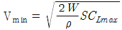
를 이용하여 구할 수 있다. 이 식에서 S가 의비하는 것은? (단, W : 항공기 중량, ρ : 밀도, CLmax : 최대양력계수이다.)- 최대비행속도
- 날개의 면적
- 평균항력계수
- 배기가스의 속도
(정답률: 85%)
10. 일반적으로 헬리콥터의 수평방향(전후좌우) 조종은 어느 것으로 하는가?
- 페달 조종
- 동시 피치 조종
- 스로틀 조종
- 주기적 피치 조종
(정답률: 62%)
11. 프로펠러 허브(Hub) 중심에서 반지름 R(m)만큼 떨어진 위치에서 선속도 V(m/min)와 프로펠러 회전수 n(rpm)의 관계로 옳은 것은?
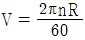
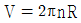
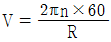
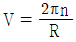
(정답률: 57%)
12. 다음 중 고항력장치가 아닌 것은?
- 슬롯(slot)
- 드래그 슈트(Drag chute)
- 에어브레이크(Air Brake)
- 역추력 장치(Thrust reverser)
(정답률: 87%)
13. 큰 옆미끄럼각에서 동체의 안정성을 증가시키고 수직꼬리날개의 유효 가로세로비를 감소시켜 실속각을 증가시키는 것은?
- 페더링
- 뒤젖힘 날개
- 도살 핀
- 앞젖힘 날개
(정답률: 76%)
14. 헬리콥터의 호버링(Hovering)조건을 옳게 나타낸 것은? (단, 항공기의 중력 W, 추력 T, 양력 L, 항력 D이다.)
- L＝W
- L＝W, T＝D＝0(Zero)
- L＞W, D＞T
- L＝T, D＝L
(정답률: 84%)
15. 조파항력 발생의 주된 원인은?
- 시위선
- 아음속 흐름
- 충격파
- 비압축성 흐름
(정답률: 79%)
16. 정기적인 육안 검사나 측정 및 기능시험 등의 수단에 의해 장비나 부품의 감항성이 유지되고 있는지를 확인하는 정비방식으로, 이 정비는 성능허용한계, 마멸한계, 부식한계 등을 가지는 장비나 부품에 활용된다. 이것은 다음 중 어떤 정비인가?
- 시한성 정비(Hard time maintenance)
- 상태정비(On condition maintenance)
- 예비품 정비(Reserve part maintenance)
- 신뢰성 정비(Condition monitoring maintenance)
(정답률: 79%)
17. 다음 중 지상 보조장비가 아닌 것은?
- APU
- GPU
- GTC
- HYD Tester
(정답률: 65%)
18. 기체 판금작업에서 두께가 0.06in인 금속판재를 굽힘반지름 0.135in로 하여 90도로 굽힐 때 세트백은 몇 in인가?
- 0.017
- 0.⑤1
- 0.125
- 0.195
(정답률: 53%)
19. 항공기기체 정비작업에서의 정시점검으로 내부구조검사에 관계 되는 것은?
- A 점검
- C 점검
- ISI점검
- D 점검
(정답률: 78%)
20. 기관 압축기 내부 등과 같이 직접 눈으로 볼 수 없는 곳을 광섬유를 이용해서 검사하는 육안검사 방법은?
- XRD검사
- 방사선검사
- 분광오일분석검사
- 보어스코프검사
(정답률: 69%)
2과목: 항공기정비
21. 다음 중 감항성에 대한 설명으로 가장 옳은 것은?
- 쉽게 장・탈착 할 수 있는 종합적인 부품정비
- 항공기에 발생되는 고장 요인을 미리 발견하는 것
- 항공기가 운항 중에 고장 없이 그 기능을 정확하고 안전하게 발휘할 수 있는 능력
- 제한 시간에 도달되면 항공 기재의 상태와 관계없이 점검과 검사를 수행하는 것
(정답률: 89%)
22. 다음 영문의 내용에 대한 옳은 값은?
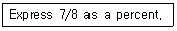
- 0.875
- 8.75
- 87.5
- 875
(정답률: 70%)
23. 사람이 들을 수 있는 주파수 이상의 파를 피검사물에 보내어 통과 또는 반사 에코를 모니터에 표시하는 검사 방법은?
- 인장시험검사
- 방사선투과검사
- 형광침투탐상검사
- 초음파탐상검사
(정답률: 92%)
24. 금속표면의 부식을 방지하기 위하여 수행하는 작업으로 적절하지 않은 것은?
- 세척
- 도장
- 도금
- 마그네슘피막
(정답률: 73%)
25. 밑줄 친 부분의 내용으로 가장 옳은 것은?
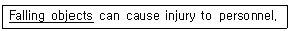
- 부품을 선별하는 것
- 수리장비를 취급하는 것
- 부품을 교체하는 것
- 부품을 떨어뜨리는 것
(정답률: 86%)
26. 호스를 장착할 때 고려할 사항으로 틀린 것은?
- 호스의 경화 날짜를 확인하여 사용한다.
- 호스는 액체의 특성에 따라 재질이 변하므로 규정된 규격품을 사용 한다.
- 호스에 압력이 걸리면 수축되기 때문에 길이에 여유를 주어 약간 처지도록 장착한다.
- 스웨이지된 접합기구에 의하여 장착된 호스에서 누설이 잇을 경우 누설된 일부분을 교환한다.
(정답률: 71%)
27. 볼트의 부품기호가 AN3DD5A로 표시되어 있다면 3이 의미하는 것은?
- 볼트 길이가 3/8in
- 볼트 직경이 3/8in
- 볼트 길이가 3/16in
- 볼트 직경이 3/16in
(정답률: 65%)
28. 접시머리리벳작업에 필요치 않는 작업은?
- 탭 작업
- 리머 작업
- 카운터 싱크 작업
- 딤플 작업
(정답률: 63%)
29. 그림의 인치식 버니어 캘리퍼스(최소 측정값 1/128in)에서 * 표시한 눈금을 옳게 읽은 것은?
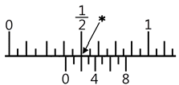
- 5/32in
- 9/32in
- 20/64in
- 25/64in
(정답률: 56%)
30. 항공기의 지상안전에서 안전색채는 작업자에게 여러 종류의 주의나 경고를 의미한다. 자색(Purple)은 무엇을 의미할 때 표시하는가?
- 기계설비의 위험이 있는 곳이다.
- 방사능 유출의 위험이 있는 곳이다.
- 건물 내부의 관리를 위하여 표시한다.
- 전기 설비상에 노출된 위험이 있는 곳이다.
(정답률: 84%)
31. 청력상실 및 고막파열의 정도가 될 수 있는 소음으로 옳은 것은?
- 25dB(A)
- 50dB(A)
- 80dB(A)
- 150dB(A)
(정답률: 85%)
32. 다음 중 B급 화재에 속하지 않는 물질은?
- 동물유
- 페인트
- 주정제
- 마그네슘
(정답률: 89%)
33. 다음 중 스냅 링(Snap ring)과 같은 종류를 오므릴 때 사용하는 공구는?
- Connector plier
- Internal ring plier
- Combination Plier
- External ring plier
(정답률: 82%)
34. 이중 플레어링(Double Flaring) 방식에 대한 설명으로 틀린 것은?
- 심한 진동을 받는 곳에 사용된다.
- 계통의 압력이 높은 곳에 사용된다.
- 튜브 연결 부분이 누설되는 것을 방지하기 위하여 사용된다.
- 지름이 비교적 두꺼운 3/8in 이상의 튜브에 적용된다.
(정답률: 57%)
35. 산소 용기를 취급하거나 보급 시 주의해야 할 사항으로 틀린 것은?
- 화재에 대비하여 소화기를 배치한다.
- 산소 취급 장비, 공구 및 취급자의 의류 등에 유류가 묻어 있지 않도록 해야 한다.
- 항공기 정비 시 행하는 주유, 배유, 산소 보급은 항상 동시에 이루 어 져야 한다.
- 액체 산소를 취급 할 때에는 동상에 걸릴 수 있으므로 반드시 보호장구를 착용해야 한다.
(정답률: 91%)
36. 왕복기관에서의 조기점화(Preignition)를 가장 옳게 설명한 것은?
- 점화불꽃 없이 고온고압에 의하여 자체적으로 폭발하는 현상
- 혼합가스가 점화불꽃에 의하여 점화되기 전에 연소실 내부에서 형성된 열점(Hot spot)에 의해 비정상적으로 연소하는 현상
- 연소실 안의 연소가스 부위가 비정상적으로 고온고압이 되어 자연 적으로 발화되는 현상
- 배기행정에서 배기가스가 완전배기되기 전에 연소실 말단 부위에서 폭발을 일으키는 현상
(정답률: 77%)
37. 가스터빈기관에서 배기노즐의 역할로 옳은 것은?
- 고온의 배기가스 압력을 높여준다
- 고온의 배기가스 속도를 높여준다
- 고온의 배기가스 온도를 높여준다
- 고온의 배기가스 질량을 증가시킨다.
(정답률: 70%)
38. 가스터빈기관 애뉼러형 연소실의 구성요소가 아닌 것은?
- 이그나이터
- 라이너
- 화염전파관
- 바깥쪽 케이스
(정답률: 61%)
39. 가스터빈기관의 2축식 압축기에서 저압 압축기를 구동하는 것은?
- 저압터빈
- 고압압축기
- 고압터빈
- 저압 및 고압터빈
(정답률: 77%)
40. 다음 중 피스톤 핀의 종류가 아닌 것은?
- 고정식
- 반부동식
- 평형식
- 전부동식
(정답률: 63%)
3과목: 항공기관
41. 왕복기관에서 역화(back fire)가 일어나는 가장 큰 원인은?
- 피스톤링(Piston ring)의 절손된 원인으로
- 농후혼합기(Rich Mixture)의 원인으로
- 희박혼합기(Lean Mixture)의 원인으로
- 푸쉬로드(Push 깽)의 절손 때문에
(정답률: 58%)
42. 압축기의 입구와 출구의 디퓨저 부분에 물이나 물－알코올의 혼합물을 분사함으로써 이륙할 때 추력을 증가시키는 것은?
- 워터 제트(Water jet)
- 물분사 장치(Water injection)
- 역추력 장치(Thrust reverser)
- 덕트 프로펠러(Ducted propeller)
(정답률: 87%)
43. 가스터빈기관 연료계통의 일반적인 연료흐름을 순서대로 나열한 것은?
- 주연료탱크－연료여과기－연료펌프－연료조정장치－여압 및 드레인밸브－연료부스터펌프－연료매니폴드－연료노즐
- 주연료탱크－연료부스터펌프－연료여과기－연료펌프－여압 및 드레인밸브－연료매니폴드－연료조정장치－연료노즐
- 주연료탱크－연료여과기－연료펌프－연료조정장치－여압 및 드레인밸브－연료매니폴드－연료부스터펌프－연료노즐
- 주연료탱크－연료부스터펌프－연료여과기－연료펌프－연료조정장치－여압 및 드레인밸브－연료매니폴드－연료노즐
(정답률: 55%)
44. 섭씨 15℃는 화씨 몇 °F인가?
- －9
- ＋9
- －59
- 59
(정답률: 76%)
45. 가스터빈기관에서 1kgf의 추력을 발생하기 위하여 1시간 동안 소비하는 연료의 중량을 무엇이라 하는가?
- 추력중량비
- 추력효율
- 비추력효율
- 추력비연료소비율
(정답률: 65%)
46. 항공기기관을 동력이 발생되는 방법에 따라 분류한 것은?
- 공랭식기관, 액랭식 기관
- 대향형 기관, 성형 기관
- 왕복 기관, 가스터빈 기관
- 소형 기관, 대형 기관
(정답률: 77%)
47. 항공기용 가스터빈기관의 역추력 장치에 대한 설명으로 틀린 것은?
- 추가적인 추력장치를 이용하여 정상착륙 시 제동능력 및 방향전환능력을 돕는다.
- 일부 항공기에서는 스피드 브레이크로 사용해서 항공기의 강하율을 크게 한다.
- 주기(Parking)해 있는 항공기에서 동력 후진할 때 사용한다.
- 비상 착륙 시나 이륙 포기 시 제동능력 및 방향 전환능력을 향상시킨다.
(정답률: 43%)
48. 왕복기관에서 임계고도는 어떤 마력에 의해 정하여 지는가?
- 이륙마력
- 정격마력
- 순항마력
- 경제마력
(정답률: 59%)
49. 다음중 항공기 왕복기관을 시동한 후 제일 먼저 점검해야 되는 것은?
- 오일 압력
- 다기관 압력
- 연료 압력
- 실린더 헤드 온도
(정답률: 59%)
50. 대향형 기관의 밸브 기구에서 크랭크 축 기어의 잇수가 40개라면, 맞물려 잇는 캠 기어의 잇수는 몇 개 이어야 하는가?
- 20
- 40
- 60
- 80
(정답률: 74%)
51. 다음 중 가스터빈기관의 기본사이클은?
- 오토 사이클
- 카르노 사이클
- 디젤 사이클
- 브레이튼 사이클
(정답률: 57%)
52. 다음 중 공랭식 왕복기관 실린더의 냉각 핀(Cooling Fin)에 대한 설명으로 옳은 것은?
- 표면이 유선형으로 항공기의 항력을 줄이고 냉각 공기의 배출량을 조 절하여 실린더의 온도를 조절한다.
- 피스톤 주의에 판을 설치하여 냉각공기가 실린더 주위로 흐를 수 있도록 유도하는 장치이다
- 실린더 외부에 지느러미 모양의 얇은 판을 부착하여 표면면적을 넓혀 열발산이 잘되도록 한 장치이다.
- 카울링의 둘레에 열고 닫을 수 있는 플랩을 장치하여 실린더 주위의 공기 흐름양을 조절하는 장치이다.
(정답률: 59%)
53. B747－400 항공기 기관의 이륙출력 작동 시 위험지역에서 배기제트의 속도 범위를 옳게 나타낸 것은?
- 56Knot 이상
- 56㎞/h 이상
- 65Knot 이상
- 65㎞/h 이상
(정답률: 63%)
54. 프로펠러의 평형 작업 시 사용하는 아버(Arbor)의 용도는?
- 평형 스탠드를 맞춘다.
- 평형 칼날 상의 프로펠러를 지지해 준다.
- 첨가하거나 제거해야 할 무게를 나타낸다.
- 중량이 부가되어야 하는 프로펠러 깃을 표시한다.
(정답률: 56%)
55. 가스터빈기관의 점화계통에 대한 설명으로 틀린 것은?
- 시동 시에만 점화가 필요하다.
- 점화시기 조절 장치가 필요치 않다.
- 왕복기관에 비해 구조와 작동이 복잡하다.
- 연료와 연소실 공기흐름특성으로 혼합가스의 점화가 어렵다.
(정답률: 47%)
56. 왕복기관에 사용되는 지시계기가 아닌 것은?
- 회전(rpm)계
- 윤활유 량(Oil Quantity)계
- 윤활유 온도(Oil Temperature)계
- 실린더 헤드 온도(Cylinder Dead Temperature)계
(정답률: 62%)
57. 가스터빈기관의 윤활유 압력에 이상이 생겼을 때 점검방법으로 틀린 것은?
- 압력이 낮을 때 압력 트랜스미터의 벤트 구멍이 막혔는지 점검한다.
- 압력이 낮을 때 탱크 여압 계통의 벤트 출구 밸브에 결함이 있는지 점검한다.
- 압력이 높을 때 스로틀 레버가 잠겨 있는지 점검한다.
- 압력이 높을 때 공급관이 베어링 레이스와 접촉되었는지 점검한다.
(정답률: 62%)
58. 다음 중 윤활유의 점도를 낮추는 장치는 무엇인가?
- 윤활유 온도계기
- 윤활유 탱크
- 윤활유 희석 장치
- 윤활유 압력 펌프
(정답률: 81%)
59. 다음 중 터보팬기관에 대한 설명으로 틀린 것은?
- 연료 소비율이 작다.
- 아음속에서 효율이 좋다.
- 헬리콥터의 회전 날개에 가장 적합하다.
- 대형 여객기 및 군용기에 널리 사용된다.
(정답률: 63%)
60. 고출력 작동 시 기화기 공기히터(Carburetor air heater)조종장치를 히터위치에 놓을 때 발생하는 현상이 아닌 것은?
- 뜨거워진 공기를 흡입한다.
- 기관 출력이 감소하게 된다.
- 흡입 공기의 밀도가 증가한다.
- 디토네이션(Detonation)이 발생 될 수 있다.
(정답률: 33%)